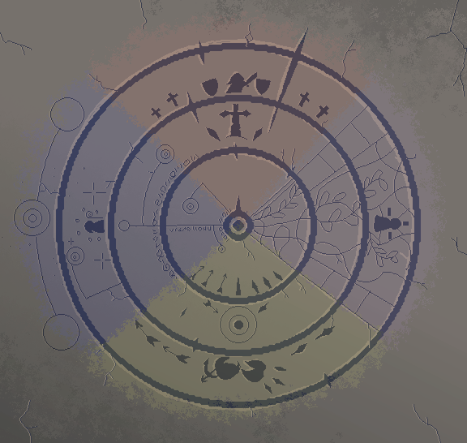

Skill Tree
Clique em um ícone para inspecionar e montar sua rotação.

Níveis ativos
Defina somente o nível usado no loadout; o destino de cada skill é determinado pelo jogo.
| Skill | Categoria | Destino | Active | SP | Scaling / hit |
|---|
Status do personagem
Todas as entradas do personagem e o resultado consolidado das fórmulas de runtime.
Progressão
O poder inato 15 é somado automaticamente. Preencha somente os bônus equipados.
Combate, cooldown e alvo
Compilado do personagem
Dano e rotação
Estimativa esperada com defesa, accuracy, crítico, elemento e contexto configurados.
Resumo
Influência por tipo
Os valores usam o contexto configurado na aba Status. Skills sem contagem explícita usam 1 hit.
Contribuição por skill
Power e scaling são aplicados por hit/tick; ocorrências descritas são somadas a cada uso.
| Skill | Lv | Scaling / hit | Ocorrências | Dano / hit | Dano / uso | CD | DPS | MP/s | % do total |
|---|
Optimizer
Encontra atributos e compara os 11 arquétipos de arma.
A build inicial e os bônus equipados vêm exclusivamente da aba Status.
Bônus equivalentes das armas
A comparação usa +30 Global como referência da coleta e preserva as proporções observadas entre Single, Dual e Global.
Recomendação
Ranking de armas
Distribuição
Próximo ponto
Contribuição
Dados e fórmulas
Ajuste parâmetros experimentais sem alterar o código.
Atributos × ataque
Fórmulas reconstruídas do runtime capturado e consolidadas no compêndio.
| Status | Tipos afetados | Impacto por ponto sobre o ATK do tipo |
|---|
HP, MP, SP e proficiências
Constantes e equações atuais do compêndio de fórmulas.
Outros coeficientes
Dados das skills
Campos desconhecidos permanecem vazios e fora do cálculo.
Fontes e método
sro.wiki — Skills sro.wiki — Weapons sro.wiki — Player StatsFonte principal: compêndio local reconstruído do runtime. A referência de nível 42 e passivas 40/41/45/45 é usada apenas para validar as fórmulas; a build inicial permanece limpa.
Scaling no Lv N = base + incremento × (N − 1).
ATK do tipo = 15 + aditivos. Dano do tipo = ATK × (30 + scaling dos atributos) ÷ 30 × percentuais. Skill Power é truncado antes do fator 0,94 e da pipeline do alvo.
Defesa, accuracy, crítico esperado, elemento, carga, distância, boss e efeitos de contexto usam os valores definidos na aba Status.